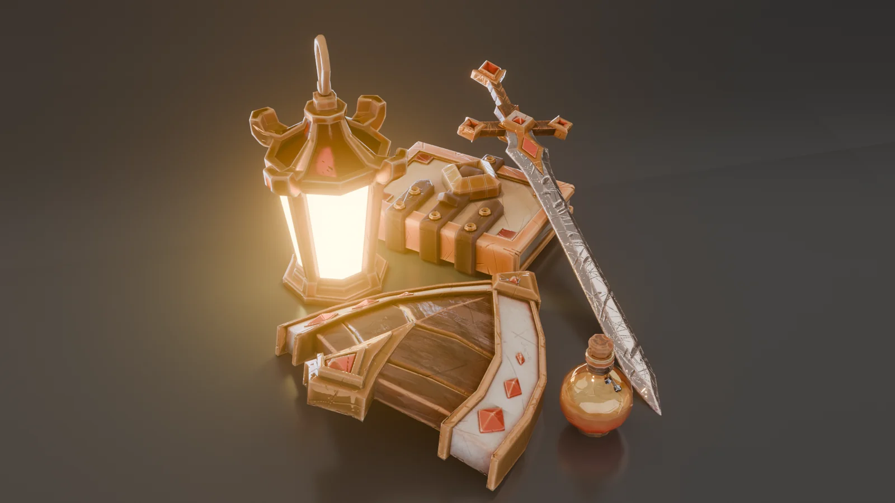
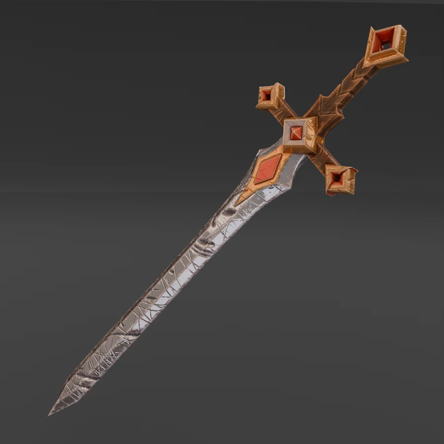
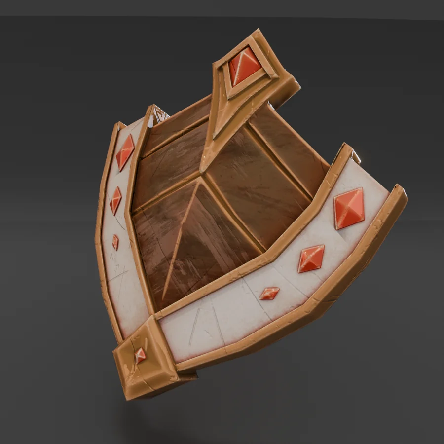
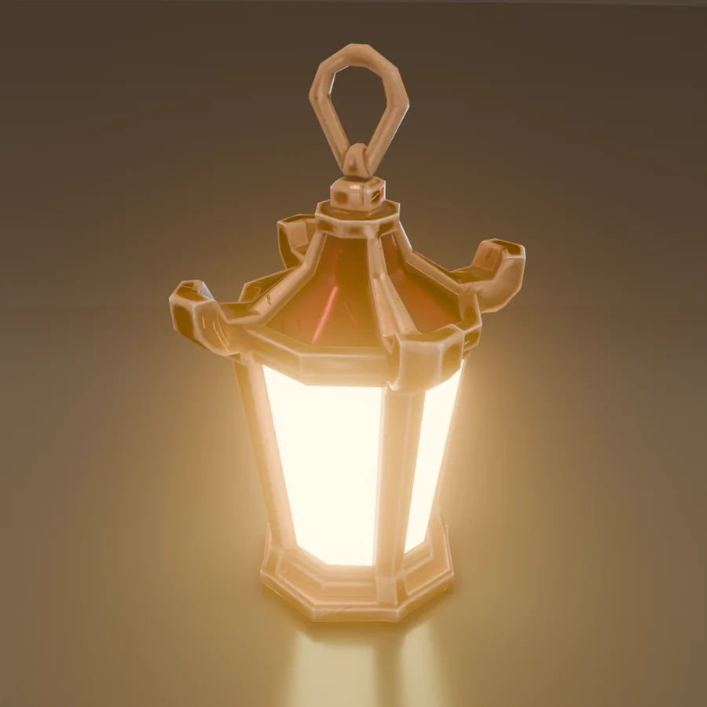
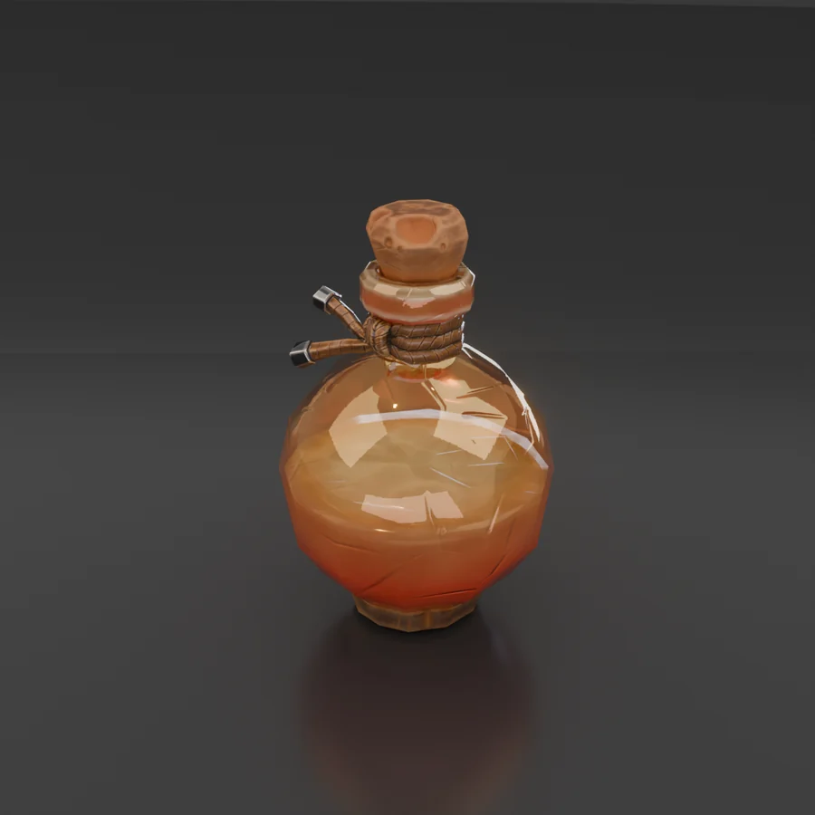
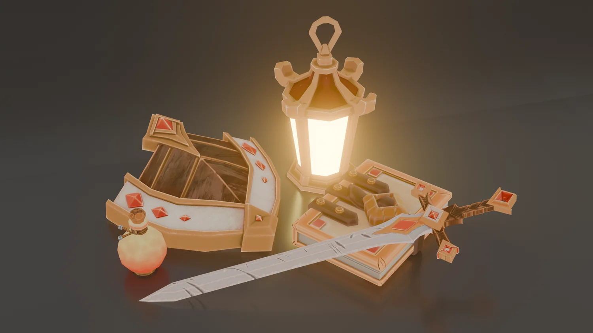
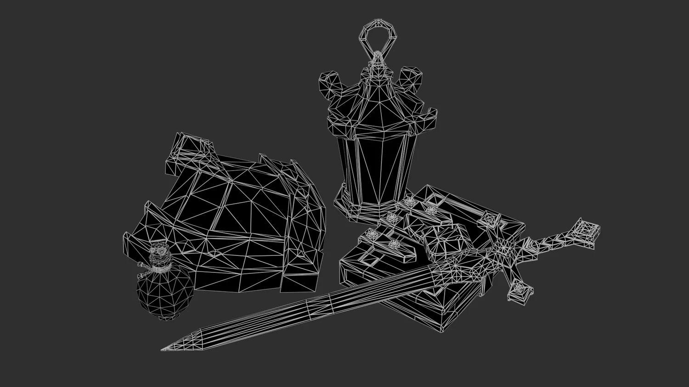

Adventurer's Kit
A stylized RPG prop set — sword, shield, lantern, potion and spellbook — modelled, unwrapped and textured in one palette, delivered with a beauty render, a base-colour pass and a wireframe.Стилизованный набор пропсов для RPG — меч, щит, фонарь, зелье и книга заклинаний — смоделированы, развёрнуты и затекстурены в единой палитре. В подаче: бьюти-рендер, карта base color и вайрфрейм.
TaskЗадача
A cohesive set of hand-held props that reads as one in-game kit.Единый набор ручных пропсов, который читается как один игровой комплект.
My partМой вклад
- Modeling and clean, game-ready topologyМоделинг и чистая game-ready топология
- UV unwrap and texture bakingUV-развёртка и запекание
- Stylized texturing in one paletteСтилизованный текстуринг в единой палитре
- Presentation rendersРендеры подачи
DecisionsРешения
- Shared warm gold-and-cream palette ties the five objects togetherОбщая тёплая золото-кремовая палитра связывает все пять объектов
- Soft bevels and painted highlights keep the stylized look readable in-engineМягкие фаски и прорисованные блики держат стилизацию читаемой в движке
ResultРезультат
Beauty render plus a base-colour and wireframe breakdown.Бьюти-рендер плюс разбор base color и вайрфрейм.

Five props, one paletteПять пропсов, одна палитра
Each object stands on its own but shares materials, edge treatment and colour with the rest of the kit.Каждый объект самостоятелен, но делит материалы, обработку граней и цвет с остальным набором.




Tech breakdownТех-разбор
Game-ready meshes with clean topology, one hand-authored base-colour pass and the full wireframe — the same files that would go into an engine.Game-ready меши с чистой топологией, прорисованная карта base color и полный вайрфрейм — те же файлы, что ушли бы в движок.

